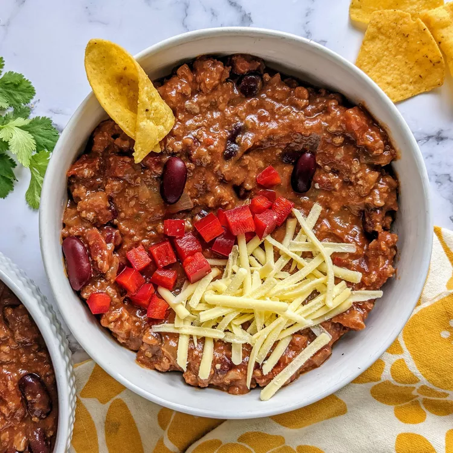

Odin Recipes
Home
About
Easy Homemade Chili

Prep time: 10 mins
cook Time: 20 mins
Total Time: 30 mins
Servings: 6
This homemade chili is loaded with beef, beans, and crowd-pleasing flavor. !
Chili — also called chili con carne or "chili with meat" — may have its roots in Spanish cuisine.
What do you need?
- Beef
- Onion
- Canned Goods
- Spices
Ingredients
- 1 pound ground beef
- 1 onion, chopped
- 1(15 ounce)can tomato sauce
- 1(15 ounce)can kidney beans
- 1(14.5 ounce)can stewed tomatoes
- 1 1/2 cups water
- 1 pinch chili powder
- 1 pinch garlic powder
- salt and pepper to taste
Steps
- Place ground beef and onion in a large saucepan over medium heat; cook and stir until meat is browned and onion is tender, about 5 to 7 minutes.
- Stir in tomato sauce, kidney beans, stewed tomatoes with juice, and water. Season with chili powder, garlic powder, salt, and black pepper. Bring to a boil, reduce heat to low, cover and let simmer for 15 minutes.
If you loved this recipe, here are more recipes for you
Back to Top
Back to Home